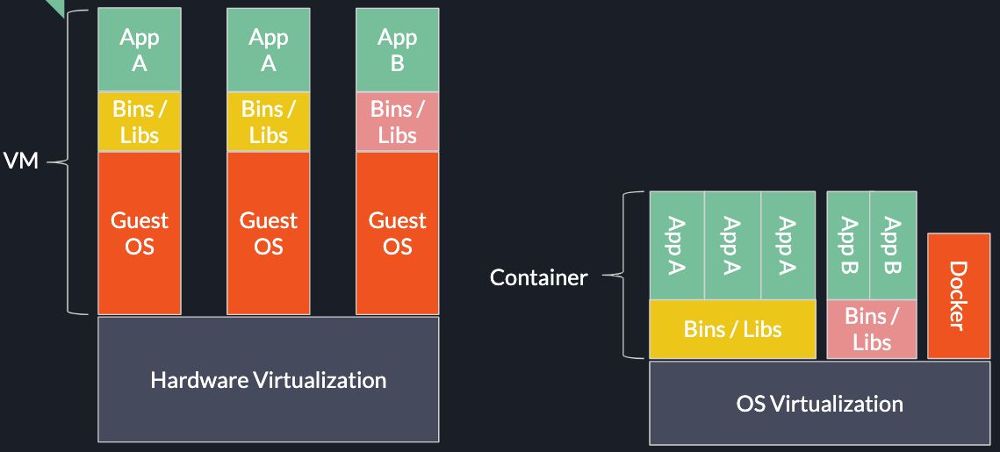

Docker使用小记
最近有需求将算法部署在服务器上，最后决定使用Docker部署。优点是负责后端的人员可以不用关心环境配置细节，并且运行效率接近原生OS的运行效率。在这里暂时记录一下目前对Docker的理解。
Docker想要实现的是类似于虚拟机的实现效果，就是能够在多平台上执行在某一个平台编写的程序。与虚拟机对硬件抽象不同，Docker使用了Container技术实现了对操作系统的抽象。（我的最笨的理解方法就是Docker将Linux上的所有指令都用Mac或Windows的指令组合代替）

使用过程中的一个小问题
在过去一段时间的使用中发现Docker的环境变量的设置和使用与在原生系统中使用不太一样。
使用的方式大致分为以下几个：
- 在Dockerfile中使用
ENV关键字 - 使用
"RUN export ..." - 在文件中记录变量，用的时候再读进去…
上面的第二种方法在我的尝试中没有成功。而第一种方法用ENV方式定义的环境变量貌似是只读的无法修改。第三种方式就如字面意思比较麻烦，并且在我遇到的make命令需要用到cflag环境变量时貌似没法读到当前行设置的环境变量…
在搜索了一阵之后，找到一种原因解释是Dockerfile中每一句RUN命令都会在上一个状态下新开一个container，在当前命令执行完后将状态保存回记录并更新。
目前解决这个小问题的方式是在宿主系统中，将所有未知环境变量(比如路径)等都固定下来，再copy到Docker中执行相应的操作。关于这个环境变量问题的最好解决方案还不知道，如果看客们有解决方法请指导指导。